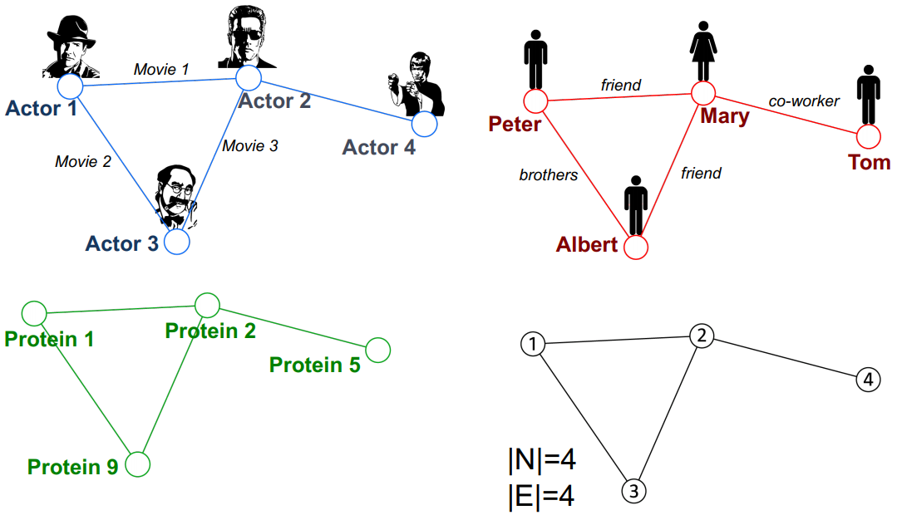

最近课题组的Summer Reading Group在学这门课，顺便写点笔记巩固一下，也方便日后查看。
Overview
本文主要参考资料为CS224W的Lecture 1和lecture 2以及Graph Representation Learning的Chapter 1 & Chapter 2，课程视频可在Youtube观看。
Lecture 1主要介绍了一些图的应用和图的基础知识，Lecture 2主要从Node Level, Link Level, 和Graph Level三个方面介绍了传统的一些图的问题和特征提取的方法。
Lecture 1: Introduction; Machine Learning for Graphs
图数据结构广泛存在于各类自然科学与社会科学的问题中，从社交网络、推荐系统，到分子结构，都存在着图结构。图结构不仅能够表现出不同节点间的关系，并且具有泛化性，如下图所示，同样的一个图在不同问题中可以有不同的含义：

随着大数据时代的到来，我们有了规模越来越大，结构越来越复杂的图数据，本门课的目的就是利用机器学习的方法来建模、分析和理解图数据。
图的表示
图 $\mathcal{G}=(\mathcal{V},\mathcal{E})$ 是由节点集合 $\mathcal{V}$ 和边集合 $\mathcal{E}$ 组成的，其中 $(u,v)\in\mathcal{E}$ 表示 $u,v\in\mathcal{V}$ 之间存在一条边。根据边是否具有方向可以将图分为有向图与无向图。
图可以用邻接矩阵 $\mathbf{A}\in\mathbb{R}^{\mid\mathcal{V}\mid\times\mid\mathcal{V}\mid}$ 来表示，其中如果 $(u,v)\in\mathcal{E}$ 则 $\mathbf{A}_{uv}=0$, 如果
$(u,v)\notin\mathcal{E}$ 则 $\mathbf{A}_{uv}=0$.
图是一种描述不同对象之间关系的数据结构，是一些节点和边的集合。图这种数据结构普遍存在于各类问题中，这门课的目的就是学习如何用机器学习的方法来分析。对于有向图来说，邻接矩阵的第$u$行的和为节点 $u$ 的出度，第 $u$ 列的和为节点 $u$ 的入度。还可以对边赋予不同的权重，来表示有权重的图。对于稀疏的邻接矩阵，可以通过存储邻接关系的列表节省存储空间。
除了以上的分类外，还可以将邻接矩阵增加一维来表示不同边的类型，如异构图，其中一个例子是 multipartite graph，即只有属于不同类别的两个节点间才会存在边。
在很多情况下，除了节点之间用边连接的关系，我们还会有一些特征，如社交网络中的用户信息。同城来说这些信息都是 node-level 的。在异构图中，我们通常会假设不同类别的节点会有不同类别的特征。
图机器学习
相比于图像和文本，图结构的大小是动态变化的，并且没有固定的节点顺序。常见的图机器学习问题有节点分类、连接预测、图分类、聚类、图生成等。从问题类型上可大致分为Node Level, Edge Level和Graph Level。图机器学习所采用的机器学习方法与其他应用中的机器学习方法相类似，但也有些不同。比如对于节点分类任务来说，不同于传统的基于监督学习的分类问题，图中的节点并不是i.i.d.的，实际上，很多方法正是利用这一点来探索相邻节点间特征的同质性来进行分类的。
下一节将分别介绍Node Level, Edge Level和Graph Level三类传统的图机器学习方法，这里就不再过多介绍了。
Lecture 2: Traditional Methods for ML on Graphs
传统的图机器学习分为四步：（1）为节点、边和图设计特征（2）收集所有训练数据的特征（3）训练机器学习模型（4）应用机器学习模型。在本节中，会分别介绍如何为节点、边和图设计特征。
本节课所讨论的皆为无向图。
Node Level Tasks and Features
对于节点层面的任务，构建特征的主要目标是描述节点在网络中的位置和结构信息，如节点的度、节点的中心性、聚类系数以及Graphlets等。各类节点特征主要可分为两类：基于重要性（节点的度、节点的中心性）和基于结构（节点的度、聚类系数以及Graphlet Degree Vector）。基于重要性的特征可用于预测图中影响力大的节点，基于结构的特征可用于预测图中节点所起到的作用。
节点的度Node Degree
节点 $v$ 的度 $k_v$ 表示节点 $v$ 的邻居节点的数量。
节点的中心性Node Centrality
节点的度没有区分不同节点的重要性，节点的中心性 $c_v$ 考虑到了不同节点的重要性，根据对重要性的不同描述，也有不同的节点中心性的表示形式，如 Eigenvector centrality, Betweenness centrality, 和 Closeness centrality 等。
Eigenvector centrality: 对于特征向量中心性，我们用节点 $v$ 的邻居节点 $u\in\mathcal{N}(v)$ 的中心性的和来表示节点 $v$ 的中心性，计算式如下： 其中 $\lambda$ 是一个大于零的常数。 根据这个定义，可以得到 由于 $\mathbf{A}$ 中的元素都是非负的，根据Perron-Frobenius Theorem，$\mathbf{A}$ 有唯一的大于0的最大特征值。我们将 $\lambda$ 选为矩阵 $\mathbf{A}$ 的最大特征值，就可以得到中心性向量为 $\mathbf{A}$ 的最大特征值对应的特征向量。
Betweenness centrality：Betweenness centrality衡量的是节点 $v$ 出现在其他节点对的最短路径上的频率，计算式如下：$$
c_{v}=\sum_{s \neq v \neq t} \frac{#(\text { shortest paths betwen } s \text { and } t \text { that contain } v)}{#(\text { shortest paths between } s \text { and } t)}
c_{v}=\frac{1}{\sum_{u \neq v} \text { shortest path length between } u \text { and } v}
e_{v}=\frac{#(\text { edges among neighboring nodes })}{\left(\begin{array}{c}
k_{v} \\
2
\end{array}\right)
# \text { (node pairs among } k_{v} \text { neighboring nodes) }
} \in[0,1]
S_{v_{1} v_{2}}=\sum_{l=1}^{infty} \beta^{l} \boldsymbol{A}_{v_{1} v_{2}}^{l},
S=\sum_{i=1}^{\infty} \beta^{i} A^{i}=(I-\beta A)^{-1}-I.
K\left(G, G^{\prime}\right)=\boldsymbol{f}_{G}^{\mathrm{T}} \boldsymbol{f}_{G^{\prime}}
c^{(k+1)}(v)=\operatorname{HASH}\left(\left\{c^{(k)}(v),\left\{c^{(k)}(u)\right\}_{u \in N(v)}\right\}\right)
$$
经过 $K$ 步后， $c^{(k)}(v)$ 能够捕捉到 $k$-hop的结构。
最后图的特征用不同颜色的数量所组成的向量来表示，Weisfeiler-Lehman Kernel的值为特征向量的内积。